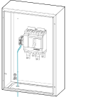

Connect the Control Cables between the UPS Cabinet and the Battery Breaker Box Battery breaker box, GUPXCD10BIEC, GUPXCD20BIEC, GUPXCD30BIEC, GUPXCD40BIEC, GUPXCD50BIEC, GUPXCD60BIEC, GUPXCD80BIEC Connect the control cables to the control terminal block X020 terminals 1 and 2 and route the control cables through the bottom of the battery breaker box to the control terminal block in the UPS cabinet and connect to X010 terminals 1 and 2. 